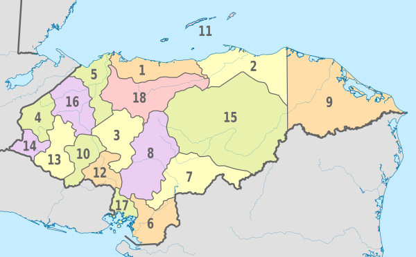

Honduras, oficialmente República de Honduras, es un país ubicado en el centro-norte de América Central. Su capital es Distrito Central, formado por las ciudades de Tegucigalpa y Comayagüela.
Honduras es un estado unitario y se autodefine como libre, soberano e independiente, unitario e indivisible. Limita al norte y este con el mar Caribe, al sureste con Nicaragua, al sur con el golfo de Fonseca y El Salvador, y al oeste con Guatemala.7La extensión territorial de Honduras, comprendiendo todas sus islas, es de 112 492 km²
Historia de Nicaragua
El territorio que corresponde a la actual Honduras fue hogar de la civilización maya durante el primer milenio de nuestra era, como lo testimonian las ruinas de Copán. Fue invadido después por los Aztecas y a continuación por los Mosquitos.En 1502, la región fue descubierta por Cristóbal Colón. La población indígena fue entonces diezmada por la conquista española y por las enfermedades que trajeron los colonos. Sin embargo, muy pronto los pueblos se mezclaron y los mestizos llegaron a ser el grupo étnico dominante de Honduras.
Al final del período colonial, la mayor parte de Honduras era una provincia poco poblada, unida a la capitanería general de Guatemala, bajo administración española, y donde la mayoría de los habitantes se dedicaban a la agricultura o a la ganadería para subsistencia. El país, después de haber provisto esencialmente metales, procuró grandes cantidades de productos alimentarios y ganado a las regiones exportadoras de índigo de El Salvador y Guatemala.
Política
El artículo 4 de la Constitución de la República de Honduras establece que «la forma de gobierno es republicana, democrática y representativa». Se ejerce por tres poderes: legislativo, ejecutivo y judicial, complementarios e independientes y sin relaciones de subordinación. También añade que la alternabilidad en el ejercicio de la presidencia de la República es obligatoria, y que la infracción de esta norma constituye delito de traición a la Patria
La Corte Suprema de Justicia de Honduras tiene su asiento en Tegucigalpa y está formada por quince magistrados propietarios y por siete suplentes, elegidos por el Congreso Nacional y está dividida en salas, de acuerdo con lo que disponga el Reglamento Interno de la misma Corte. El Poder Judicial de Honduras se integra por una Corte Suprema de Justicia, por las Cortes de Apelaciones, los Tribunales de Sentencia, los Tribunales de Ejecución de Penas y los Juzgados que establezca la ley.El Presidente de la Corte Suprema es elegido por el Congreso Nacional, por un período de siete años.
Organización territorial

Honduras se divide en 18 departamentos, cada cual con un gobernador designado por el Presidente, los departamentos se dividen en municipios, a la vez divididos en pueblos y aldeas. La capital de la República es Tegucigalpa, que junto a la ciudad de Comayagüela conforman el Distrito Central; jurisdicción del departamento de Francisco Morazán.
Turismo
Mejores lugares turísticos de Nicaragua.
El Instituto Hondureño de Turismo (IHT) tiene como misión "conducir el desarrollo turístico nacional, mediante las actividades de planeación, impulso al desarrollo y diversificación de la oferta, apoyo a la operación de los servicios turísticos y la promoción, articulando las acciones de diferentes instancias y niveles de gobierno.
1. Roatán.
Si estás planificando tus vacaciones en Honduras tienes que tomar en cuenta a la Isla Roatán. Su nombre significa “Reino Celestial” siendo la isla más grande del Archipiélago Bahía contando con una extensión de 60 kilómetros de playas cristalinas y selvas con abundante vegetación
Esta isla se caracteriza a su vez por su arrecife de coral reconocido como el segundo de mayor tamaño del mundo, así como también por el cruce de culturas africanas e indígenas.Es uno de los destinos turísticos de Honduras donde converge la naturaleza con lujosos hospedajes y restaurantes con servicios de alta calidad para que disfrutes al máximo tus días de descanso.
2. Tegucigalpa
Una vez que hayas llegado a Honduras no dejes de recorrer Tegucigalpa, la ciudad capital de este país fundada en 1578 la cual no es simplemente un antiguo pueblo minero y un valle rodeado de montañas.En esta ciudad, admirarás atracciones importantes como el Teatro Manuel Bonilla, siendo uno de los lugares culturales de Honduras que no puedes dejar de visitar.
ambién es un departamento repleto de buenos restaurantes, posadas y oficinas empresariales además de cuidados espacios recreativos como “La Leona” y “Naciones Unidas” donde verás extraordinarias panorámicas.Asimismo podrás disfrutar de los recitales de la Orquesta Sinfónica de Honduras realizados en cualquier local de la entidad
3. Cayos Cochinos
Una de las cosas que tienes que hacer en Honduras es ir a Cayos Cochinos, un archipiélago conformado por 13 cayos y 2 islas de origen coralino de unos 30 kilómetros de extensión conocido por ser uno de los destinos de playas en Honduras más visitados por los turistas..
Está ubicado en la costa norte de Honduras y pertenece al Municipio Roatán. En estas bellas y limpias playas podrás practicar snorkel y comer principalmente langosta y machuca, una sopa con pescado y leche de coco.Cayos Cochinos es uno de los más bellos lugares de Honduras repleto de las reservas biológicas marinas de importancia para este país, donde verás tortugas en la orilla y a la vez sumergirte en sus aguas para que aprecies de cerca los arrecifes vírgenes de Honduras.
4. La Ceiba
Si estás en Honduras tienes que ir a La Ceiba, la tercera ciudad más importante de este país pues en ella se produce caña de azúcar, banano, arroz, maíz y plátano así como también es una entidad ganadera.
Asimismo, es considerada el punto de partida hacia los mejores lugares turísticos en Honduras del departamento de Islas de la Bahía, como las costas Roatán, Útila y Granaja las cuales están en la barrera de arrecifes más significativa de este territorio.Igualmente es una entidad en la que contarás con buenos espacios de alojamiento y restaurantes a precios accesibles. Además en ella podrás adquirir los mejores paquetes turísticos de Honduras para que recorras esta ciudad y no tengas tiempo de aburrirte.
5. Útila
La isla Utila es uno de los mejores destinos turísticos en Honduras y además una excelente opción si lo que quieres es entregarte al buceo, pues aquí encontrarás unos arrecifes coralinos dignos de admirar de cerca.
Está ubicada en el departamento Islas de la Bahía de Honduras y está a 29 kilómetros de La Ceiba.Cuenta con una extensión de 11 kilómetros y fue declarada por la Organización de las Naciones Unidas como el Santuario de la Vida Marina en el 2017. Esta declaración no es en vano pues en Utila encontrarás el Centro Oceánico de Investigación donde estudian los tiburones y ballenas de playas aledañas.
Cultura
La cultura de Honduras es el conjunto de expresiones de un pueblo y estas consisten de: Costumbres, prácticas, códigos, normas y reglas de la manera de ser, vestirse, religión, rituales, normas de comportamiento y sistemas de creencias. Honduras es un paísmultiétnico, por consiguiente es un país multicultural. La composición étnica de Honduras es el siguiente: 8% blancos, 1% negros garífunas, 6% indígenas y el 85% población es predominantemente mestiza.
La cultura popular en Honduras como en la mayoría de los países, consiste de creaciones artísticas donde concurren grandes audiencias o espectáculos. Tales exposiciones artístico-culturales se llevan a cabo durante determinados días del año a través de celebraciones especiales.
Gastronomía
La gastronomía de Honduras tiene sus raíces en la cocina precolombina mesoamericana, en donde se empleaban distintas especies de plantas, animales y peces, a su vez eran empleados como remedios naturales o medicamentos. Algunas de las especies vegetales ampliamente usados eran el maíz, los frijoles, annonaa, ayote, calabaza, mandioca, tomate, papa, pataste, camote, vainilla, canela, cacahuates, entre otras.
Los platos preparados con estos alimentos han sido muy bien elaborados, entre ellos podemos mencionar las tortillas (hechas con maíz nixtamalizado), burritos hechos con frijoles cocinados envueltos en una tortilla, palomitas de maíz, tamales, chili y bebidas como el chocolate, el pinol y el atole.